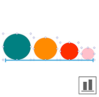
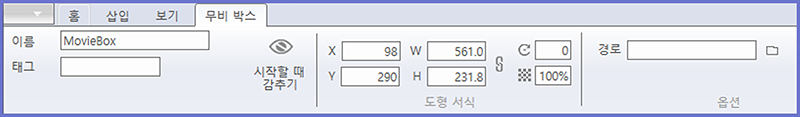

컨트롤 패널은 최상단의 탭(홈, 삽입, 보기)에 따라 다른 형태의 리본 메뉴가 나타납니다. 또한 객체의 유형(텍스트박스, 이미지박스, 무비박스 등)에 따라 속성값을 수정하는 서식 메뉴가 나타납니다.
.png)
컨트롤 패널의 기본은 홈 탭 모드입니다. 홈 탭에는 클립보드, 도형 서식, 개체 정렬, 정렬, 그룹, 확대/축소, 유실된 리소스 같은 객체를 편집하기 위한 편리 기능이 있습니다.

정렬은 여러 개의 레이어 모서리 위치를 맞추거나 간격을 적절하게 지정할 수 있는 도구입니다. 두 개 이상의 레이어를 선택한 후 원하는 방향의 정렬 및 배분 아이콘을 선택하시면 됩니다.
| 왼쪽 정렬 | 가운데(수직) 정렬 | 오른쪽 정렬 | 수직 중앙 정렬 |
|---|---|---|---|
|
|
| 상단 정렬 | 가운데(수평) 정렬 | 하단 정렬 | 수평 중앙 정렬 |
|---|---|---|---|
 |
 |
객체를 선택한 후 정렬 아이콘을 선택하시면 객체의 배치 순서를 바꿀 수 있습니다.
| 현재 위치 (2-3-1) | 앞으로 가져오기 (2-1-3) | 맨 앞으로 가져오기 (1-2-3) |
|---|---|---|
 |
| 현재 위치 (1-2-3) | 뒤로 보내기 (2-1-3) | 맨 뒤로 보내기 (2-3-1) |
|---|---|---|
 |
| 현재위치 | 앞으로 가져오기 | 맨앞으로 가져오기 |
|---|---|---|
객체의 정렬 순서(z-index)는 레이어 패널에서 확인할 수 있으며, 드래그앤드롭으로도 객체 순서를 바꿀 수 있습니다.
그룹은 둘 이상의 객체를 묶어 하나의 객체처럼 다루는 방법입니다.
| 그룹 지정 | 그룹 해제 |
|---|---|
 |
| 그룹 지정 시 레이어 | 그룹 해제 시 레이어 |
|---|---|
 |
그룹화는 레이어 패널에서 확인할 수 있으며, 드래그앤드롭으로도 그룹 순서를 바꿀 수 있습니다.

작업 창의 화면을 원하는 비율에 맞게 확대/축소 할 수 있습니다.

유실된 리소스란 페이지빌더 문서에서 참조하고 있으나 실제 존재하지 않는 리소스(이미지 파일, 액션)를 의미합니다.

[액션] 항목에서 유실된 액션 효과를 선택하고 하단의 아이콘을 클릭하면 유실된 액션 경로를 찾을 수 있습니다.
상단 메뉴에서 삽입 탭을 선택하면 다음 그림과 같이 리본 메뉴가 삽입 탭 모드로 바뀝니다. 텍스트박스, 이미지박스, 스크롤, 웹박스, 무비박스, 테이블를 그릴 수 있습니다. 또한, 다양한 모양의 도형을 그릴 수 있습니다.

텍스트 박스는 글 상자입니다. 텍스트 박스를 선택하면 다음과 같은 텍스트 서식 메뉴가 나타납니다.
서식 메뉴에서 폰트의 종류, 폰트 크기 등의 글자 스타일과 들여쓰기, 행 간격 등 단락 스타일을 지정할 수 있습니다.
텍스트 박스 아이콘을 클릭하고 작업 창에 드래그하면 텍스트 박스가 생성됩니다. 텍스트 박스를 더블 클릭하면 텍스트를 입력할 수 있습니다.
이미지 박스는 이미지를 넣을 수 있는 박스입니다. 이미지 박스의 객체를 선택하면 이미지 박스의 서식 메뉴가 나타납니다.

서식 메뉴에서 이미지의 크기와 속성을 지정할 수 있습니다. 왼쪽의 옵션 영역의 파일 아이콘을 클릭하면 이미지 파일을 가져올 수 있습니다. 이미지 자르기(크롭)과 액션 효과를 적용할 수 있습니다. (현재 지원하는 이미지 형식은 png, jpeg, jpe, gif, tiff, tif 입니다)

이미지 박스 서식 메뉴에서 '크롭'을 선택한 후 이미지 포인터를 드래그하여 이미지 크기를 조절할 수 있습니다.
이미지에 다양한 액션 효과를 적용할 수 있습니다.
| 푸쉬 | 토글 | 깜빡거림 |
|---|---|---|
| 스크래치 1 | 스크래치 2 | 스크래치 3 |
|---|---|---|
 |
 |
스크롤 기능으로 화면의 스크롤 영역 크기를 조절할 수 있습니다.

스크롤 화면의 사이즈를 contents width(가로)와 contents height(세로)의 입력칸에 수치를 입력해서 조절 할 수 있습니다.
웹 박스를 사용해서 웹 사이트를 작업창에 가져올 수 있습니다.
웹 박스 선택 후 웹 박스 서식 메뉴에서 URL 입력 박스에 웹 주소를 입력하면 됩니다.


무비 박스 모드에서는 작업창에서 동영상 파일 재생을 할 수 있습니다.
무비 박스 서식 메뉴에서 영상의 크기와 위치를 지정할 수 있습니다. 무비 박스 선택 후 경로의 파일 아이콘을 체크하면 영상 파일을 가져올 수 있습니다. (현재 지원하는 비디오 형식은 mp4입니다.)
영상 미리보기는 미리보기 하위 메뉴 중 'Google Chrome'과 'Internet Explorer' 에서만 확인이 가능합니다.
(작업창과 미리보기 하위 메뉴 중 '미리보기' 에서는 영상 재생이 불가합니다.)
테이블을 이용하여 표를 만들 수 있습니다.
테이블 서식 메뉴에서 표의 크기와 위치를 지정할 수 있습니다. 테두리 더블 클릭하시면 포의 테두리 세부 설정이 가능합니다.
테이블 아이콘을 클릭하면 표의 칸수를 설정할 수 있는 칸이 나타납니다. 원하시는 만큼의 칸수를 마우스로 선택한 뒤 작업 창에 드래그하면 테이블이 만들어집니다.
도형 메뉴에서 원하는 모양의 도형을 선택해서 그릴 수 있습니다.
서식 메뉴에서 도형의 크기, 위치, 회전, 투명도, 선 두께 등의 값을 조절할 수 있습니다. 또한, 정렬, 그룹화, 옵션을 지정할 수 있습니다.

옵션에서 푸시와 깜박거림 효과가 있습니다.

[깜박거림] 효과에서 정지할 때 멈추기를 하면 효과를 마우스 클릭으로 멈출 수 있습니다. 동작 시간과 깜박거리는 속도를 지정할 수 있습니다.
| 푸쉬 | 깜박거림 |
|---|---|
 |
컨트롤 패널의 보기 모드는 눈금자 숨기기, 안내선 보기, 박스선에 붙이기, 안내선에 붙이기를 지원합니다.

원하는 기능을 클릭하시면 사용이 가능합니다.
기능을 사용하시면 편집을 더욱더 쉽고 빠르게 하실 수 있습니다.